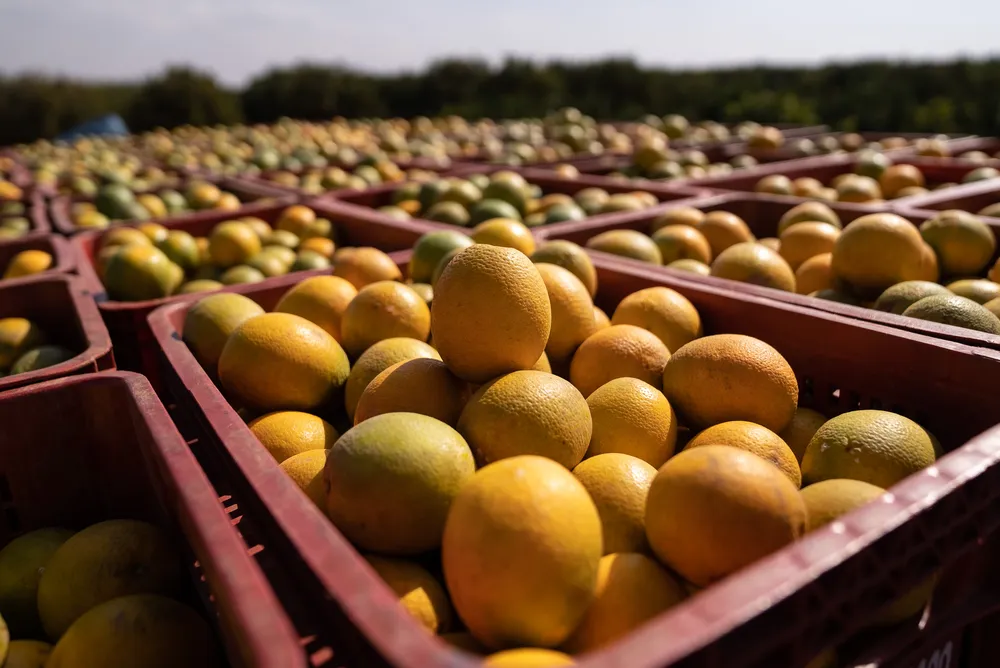

Ciclone deve trazer chuva e ventos de até 90 km/h para o Sul nesta quinta; frente fria avança para o Sudeste no fim de semana

Uma frente fria que se forma no Sul do Brasil nesta quinta-feira (22) deve mudar o tempo em todo o país nos próximos dias. O sistema está associado a um ciclone extratropical em alto mar e deve trazer muita chuva e ventos fortes para o Rio Grande do Sul já nesta quinta.
Nariz sangrando, lacrimejamento, pigarro e mais: como o clima seco e a umidade baixa do ar afetam a saúde
Tipicamente um mês mais seco, agosto de 2024 está ainda pior por causa da alta de queimadas e focos de incêndio na Amazônia, a maior floresta tropical do planeta.
Para além das consequências no planeta, a fumaça (somada à falta de chuva) afeta também a saúde das pessoas, que sofrem com a baixa umidade do ar.
Clima encarece preço da laranja e estoques do suco para exportação podem zerar; entenda

O calor, a seca e a incidência da doença greening nas lavouras de laranja estão fazendo com que a fruta e o suco mantenham preços elevados. Os estoques da bebida já estão tecnicamente zerados, aponta a Associação Nacional dos Exportadores de Sucos Cítricos (CitrusBR).
Rifas criadas por influenciadores: veja o que diz a lei sobre a prática

Rifas de carro, moto e dinheiro. Tudo isso é proibido no Brasil, segundo o Ministério da Fazenda. Nesta terça (20) o influenciador Nelio Dgrazi, de Belo Horizonte, foi alvo de um mandado de busca e apreensão suspeito de fazer rifas de veículos e valores em dinheiro.